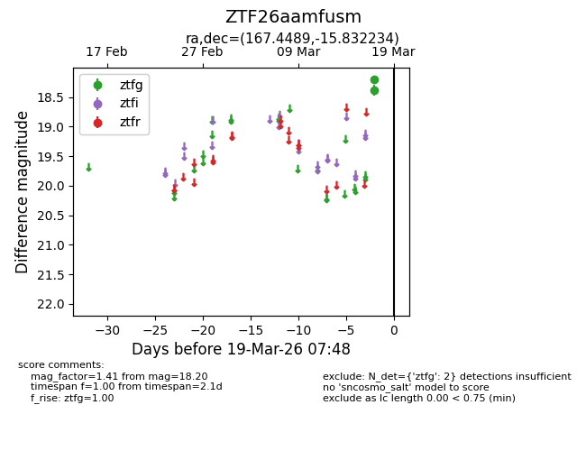
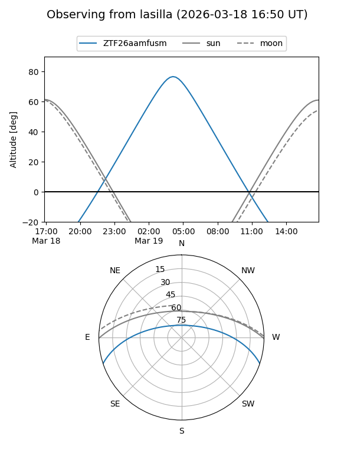
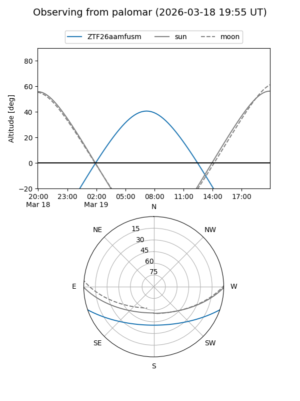

ZTF26aamfusm
Target ZTF26aamfusm at 2026-03-19 07:50
Aliases and brokers:
FINK: link
Lasair: link
ALeRCE: link
alt names
ZTF26aamfusm (ztf,fink_ztf)
Coordinates:
equatorial (ra, dec) = 167.4489,-15.83223
equatorial (HMS+DMS) = 11:09:47.74,-15:49:56.04
galactic (l, b) = (270.0698,+40.46545)
Flags:
Photometry:
last ztfg=18.20
2 ztfg detections
Lightcurve

Visibility


Additional plots